出羽三山のひとつ、
湯殿山。
日本広しといえど、湯殿山ほどミステリアスな霊場もそうあるまい。
なぜならこの神社の御神体の正体に関しては古くからタブーとされてきたからだ。
皆さんも
「語るなかれ、聞くなかれ」というフレーズを聞いたことがあるだろう。
私も角川映画、
湯殿山麓呪い村のCMで昔見たぞ。
…羽黒山神社に参拝した翌日、我々珍寺大道場特別調査隊は出羽三山のハイライトとでも言うべき湯殿山にやってきた。
あ、特別調査隊じゃなくて単なる家族旅行でした…。
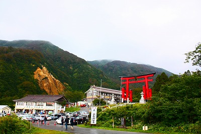
鶴岡市内から車で移動し、湯殿山の麓、仙人沢へ向かう。
最初っから余談と愚痴で恐縮だが、鶴岡というのは大きな街なのに、少し時間をはずしたら夕食を食べるところがほとんど閉まっていた。
結局郊外のスーパーで売れ残っていた弁当を買い、宿のベッドの上で家族で正座して食した記憶はこのレポートを書いている6年後の今でも鮮明に憶えている。
あまりにも侘しかった所為だろうな。確か衣がふにゃふにゃのから揚げ弁当だったな。半額シールの付いた。
さらに余談は続く。
あくまでも個人的な体験の結果だが、どうも地方の中堅都市で美味しい食事にありついたことがない。
もちろん事前に調べたりしないのが最大の要因なのだが、それにも増して地方中堅都市には妙に飲食店が少ないように思う。
駅は立派なのに、駅前には見事に店がないのは旅慣れた方々ならばとっくにご存知のことであろう。
きっと郊外に立派なショッピングモールがあるのだろうが、旅に出てガストとかサイゼリヤに入るのも侘しいしねえ〜。
ちなみに同じ山形県内の某都市では耳がおかしくなるレベルの爆音で野球中継を流しているラーメン屋で舌がおかしくなるレベルのしょっぱいラーメンをすすってひたすらカロリー補給に徹したこともあったっけ。ふにゃから弁当よりはマシだが。
旅ではコンビニのおにぎりしか食べませぬ、という剛の者もいるが、私は「出来れば地のものが食べたい」派なので、ふにゃから弁とか激塩ラーメンとかはやっぱり淋しかったなあ。子連れの家族旅行だというのに…。
以上余談と愚痴でした。本当に愚にもつかない話でスマン。
で、本題に戻ります。ええと、何のハナシだっけ？
湯殿山のハナシだよっ！
…湯殿山は
前回レポートした羽黒山、そして月山の三座からなる出羽三山の信仰の一翼を担う山である。
月山はガチな修行の場、いわゆる体育会系の山、羽黒山は一番人が集まるいわば観光の山、そしてここ湯殿山は神秘のベールにつつまれた、言うなればオカルティックな山と言えよう。
この山には湯殿山神社があるのだが、「語るなかれ、聞くなかれ」でお馴染みの御神体のある本宮は専用のバスでしか行けない。
この駐車場がある仙人沢は参籠所などがある。いわゆる里社のようなところ。
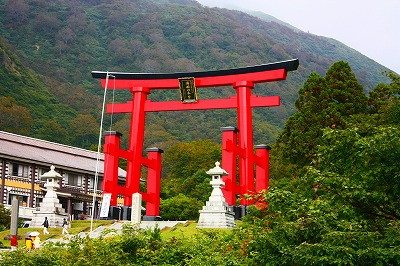
何といっても巨大な鳥居が目を惹く。
鳥居の足元の根巻の部分だけで人の背の高さほどもあるのだ。
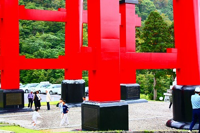
勿論鉄筋コンクリ製だろうが、それにしても巨大な鳥居を作ったものだ。
近くには即身仏の記念碑が建っている
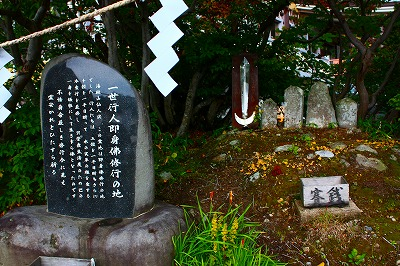
湯殿山といえば、忘れてならないのが即身仏。
日本にある即身仏17体のうち10の行者はここ湯殿山の仙人沢で修行をしている。
いわば
即身仏の聖地のような場所なのだ。
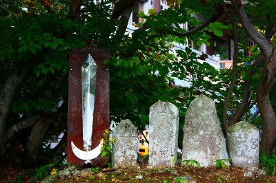
ちいさなお堂の中を覗くと…
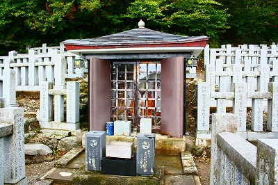
うわ。即身仏がむき出しで安置してある！
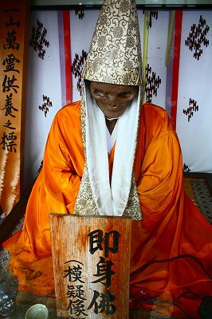
…と思ったらレプリカでした。はあはあ。
にしても即身仏に縁の深いこの場所ならではの光景だ。
憂国碑 碇地蔵尊。
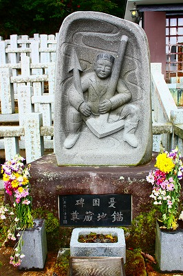
納骨堂には人形が奉納されていた。チョット怖いすね。
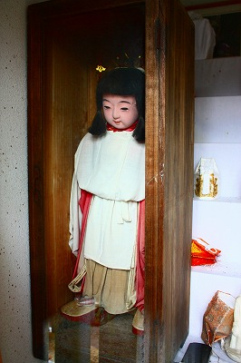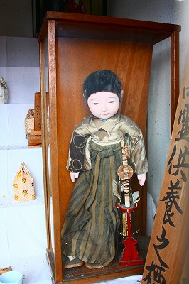
さて、そんなこんなで肝心の
湯殿山神社本宮へと向かう。
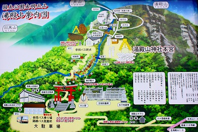
↑地図の赤い鳥居があるところが仙人沢。
一般車の通行はここまでで、その先は参拝者専用バスに乗って行くことになる。
そしてバスの終点からしばし歩くと肝心の湯殿山の御神体が拝める、という按配になっている。
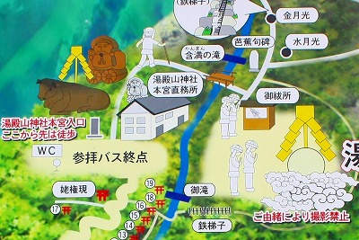
語るなかれ聞くなかれ、の場所ゆえ絵地図にもその正体は伏せられている。
バスはのんびりと山道を登っていく。
到着したのはこんなところ。
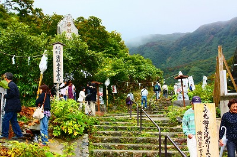
結界のように注連縄が張り巡らされ、否が応でも緊張感が高まってくる。
建立されたばかりの牛の像もあった。
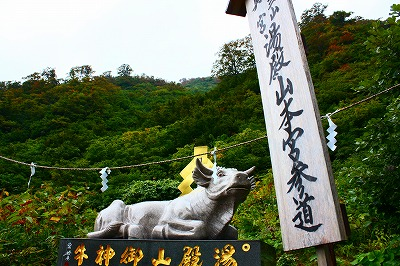
ここを訪問した2009年は丑年だったのだが、出羽三山にとって丑年は重要な年なのだという。
そういえば羽黒山にも十二年に一度訪れる幸福の年、といったノボリがあちこちに立っていた。
というわけでここから先は聖域ゆえ写真撮影は禁止。
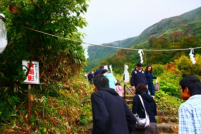
名残惜しく石碑を撮ったりして。
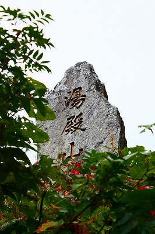
というわけでここから先は写真なし。
本来であれば語るなかれ、なのだが、まあ、語るのすら止めちゃうとハナシが進まないのでこっそり語っちゃいます。
当方は勝手に語っちゃいますけど禁忌を犯したくない方は聞くなかれ、の方を徹底していただければよろしいかと。
…というわけで禁忌上等の方限定でお話しますよ。
山道をしばらく進むと木々の間から白いモノが見えてくる。
それは木の棒の先に御幣を付けたものだった。御幣は濡れても痛まないようにビニール袋に包まれている。
歩き進むうちにその棒付き御幣がどんどん増えてくる。
見れば一本一本に奉納者の名前が書かれているではないか。
気がつけば道の両脇はすべてその御幣に覆われてしまった。
さらに進むと沢が見えてくる。
沢を渡るといよいよ御神体とのご対面である。
その前に小屋があり、お祓いをすることになっている。
小さなヒトガタの紙を沢に流すのだ。こうして穢れを払うのだとか。
小さな沢に無数のヒトガタが浮かぶ光景は最早この世のものとは思えないほど神秘的だった。
（ヒトガタの写真は許可を得て撮影させていただいたが、語るなかれ、の禁忌を尊重してここでは公開を控えさせていただく）
さて、ここで全ての参拝者は靴を脱ぎ素足になり小さな門を潜る。
いよいよ御神体の登場だ！
…そこに現れたのは巨大なてらてらしたオレンジ色の岩だった。
その先端から温泉が湧き出しており、それがずーっと下まで流れてきているのだ。
つまり温泉の鉄分でオレンジ色に染まっているのだな。
この山に神性を見出した蜂子皇子はそこに生命の根源を感じたのだろう。
これが語る無かれ、聞く無かれ、といわれ続けてきた湯殿山のご本尊なのか！！！！
足元に流れる温泉の暖かを感じつつ岩を登り、温泉の噴出孔を拝みながら「御神体」を一巡りする。
興奮して気がつかなかったが、見れば御神体の傍らに小さな洞穴があり、そこに大勢の人がいた。
洞穴の岩壁には数え切れないほどの小さな紙が貼り付けられているではないか。
紙には亡くなった人の名前や戒名が書かれている。
御神体から噴出する温泉が岩壁を伝っているので貼り付けられた紙はすぐに濡れてしまう。
そして濡れた紙が自然と溶けて無くなると、その故人は成仏するのだという。
これは
岩供養という供養習俗なのだそうだ。
岩供養に関してはあまり資料がなくて詳しいことがわからないのだが、恐らく
湯殿山信仰の本質の部分とは別の民間信仰的性格を帯びたものなのではなかろうか。
というのも死者供養に特化しすぎているし、何というか…その洞穴の部分だけ妙に浮いてるんだよねえ。
感覚的な感想なんで断言しにくいんだ。すまぬ。
ただ、前回お伝えした
羽黒山の三神合祭殿と霊祭殿の関係に似てるような気がするのだ。
というのも霊祭殿の脇に前世の因業を記した卒塔婆が並んでいたように、ここ岩供養にも
前世の因業を惹起させる紙が幾つも貼られていたのだ！
羽黒山と湯殿山、両方にわたって展開される謎の死者供養。
その正体は判るはずもないが、ねっとりとした奥深い信仰の奥の奥を覗き込んでしまったようだ。
てなわけで湯殿山の御神体めぐりは終了。
ビジュアル的にお伝えできなくて申し訳ないが、超オススメの霊場である。
是非とも足を運んで、その信仰の真髄に触れていただきたい。
もう、ホント凄いんですから。
再びバスに乗って仙人沢に戻る。
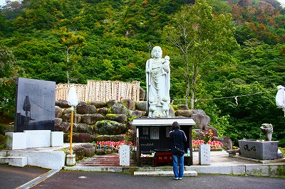
行くときは気づかなかったが、水子地蔵があり死者供養の場となっている。
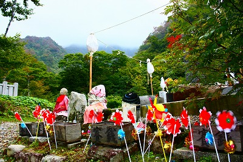
そしてここにも大量の卒塔婆が林立していた。
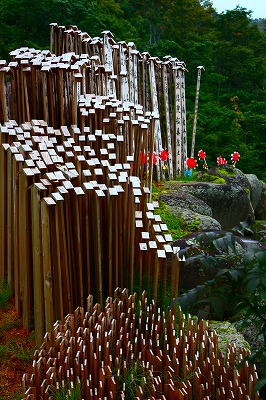
羽黒山のような具体的な因業が書かれた卒塔婆は無かったが、中にはまた
不思議な文言の卒塔婆が並んでいた。
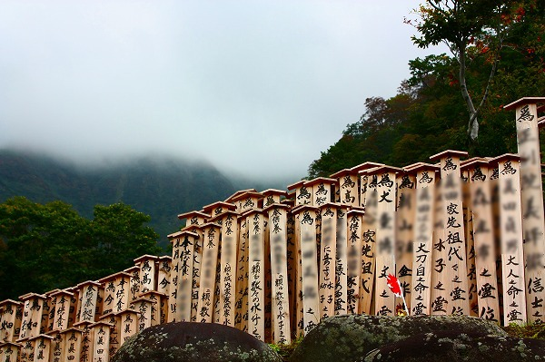
○○（故人の名前）に頼る数々の水子之霊位
○○に立ちよりし水子幼子之霊位
○○に頼る○○家、○○家水子之霊位
うむ〜。深すぎるぞ、民間信仰。